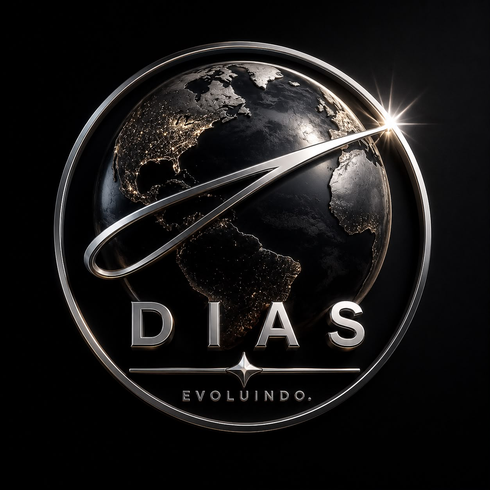

DIAS IA
Estamos construindo uma inteligência artificial
para pessoas reais.
Cada sugestão enviada é analisada e pode influenciar diretamente
as próximas versões do projeto.
Sua ideia pode fazer parte da história do DIAS IA.
Suas respostas nos ajudam a desenvolver uma inteligência artificial cada vez mais útil.
Nosso objetivo é lançar uma inteligência artificial madura, estável e realmente útil. Preferimos evoluir continuamente do que lançar algo incompleto.
55% concluído